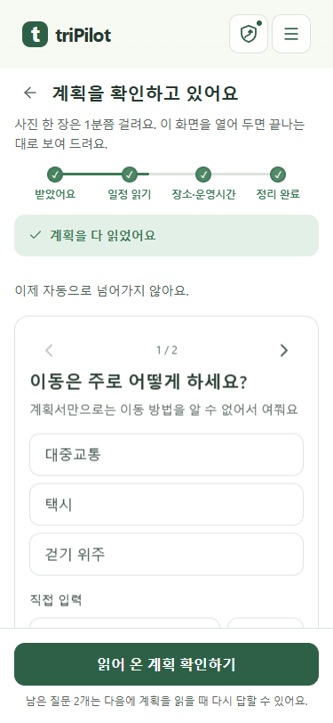
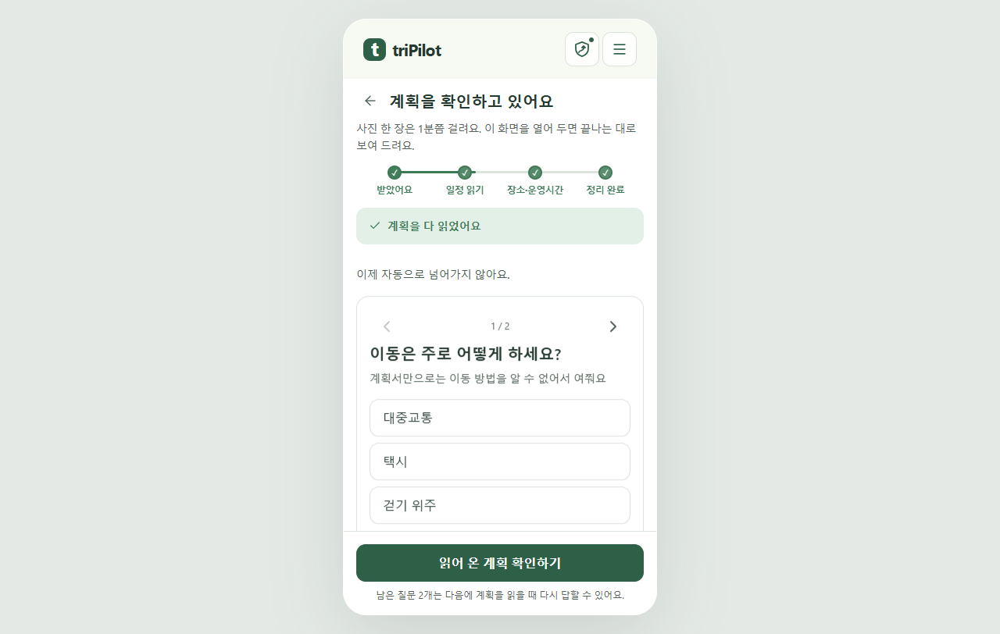

<!doctype html><html lang="ko"><meta charset="utf-8"><meta name="viewport" content="width=device-width,initial-scale=1"><title>완료 상태 진행 문구</title><style>body{margin:24px;background:#f4f6f3;color:#213b30;font-family:system-ui}main{max-width:1280px;margin:auto}img{max-width:100%;height:auto;display:block;border:1px solid #d8e0dc}figure{margin:24px 0}figcaption{margin:12px 0}</style><main><h1>정리 완료 뒤 이전 진행 문구 제거</h1><p>완료100%에서는 마지막7/8 알림을 숨깁니다. 질문 대기·결과 확인은 기존 흐름을 유지합니다.</p><figure><figcaption>375px 실제 Chrome</figcaption><a href="completed-questions-375.png"></a></figure><figure><figcaption>1280px 실제 Chrome</figcaption><a href="completed-questions-1280.png"></a></figure></main></html>